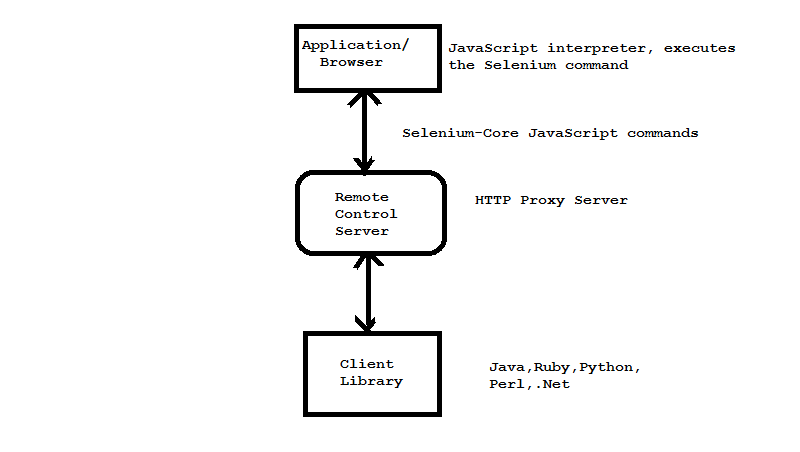

Selenium
What is Selenium?
- Selenium is mainly used for automating the browsers. i.e it automates only the web application.
- Language that selenium supports are :
- JAVA, C#,JavaScript, Objective C,Perl,PHP,Python,Ruby.
Selenium-RC API(Selenium 1.x)-Architecture

Advantages:
- Selenium IDE is very easy to use.
- Programming language experience is not required for Selenium IDE.
- Selenium IDE provides Logging capabilities using file login plug-in.
Disadvantages:
- Selenium RC does not directly communicate with the browser.
- Poor Programming interface.
- Selenium RC doesn't support dynamic finders
- Selenium RC doesn't explicitly provide aids to handle alerts, navigations, dropdowns
- Selenium RC doesn't support listeners
Selenium Webdriver (Selenium 2.0)
Selenium 1.0 + WebDriver = Selenium 2.0
WebDriver overcomes the limitation of Selenium RC's.
Advantages:
WebDriver communicates directly with the web browsers. Thus making it much faster.
- WebDriver doesn't require any server to be started before executing the test scripts
- WebDriver is a purely object oriented tool
- WebDriver supports dynamic finders
- WebDriver offers a wide range of utilities and classes that helps in handling alerts, navigations, and dropdowns efficiently and effectively.
Limitation:
- WebDriver Cannot Frequently Support New Browsers.
- WebDriver does not support mobile apps automation till 2.x
Selenium WebDriver and Selenium Server
Selenium Webdriver and Selenium Server:
- You are using Selenium-Grid to distribute your tests over multiple machines or virtual machines (VMs).
- You want to connect to a remote machine that has a particular browser version that is not on your current machine.
- You are not using the Java bindings (i.e. Python, C#, or Ruby) and would like to use HtmlUnit Driver
- When you want to use selenium webdriver in Jmeter,SOUP UI ,other test tools etc.
How Selenium WebDriver Automates a Browser
- Selenium basically automates a browser on the basis of DOM elements.
- Basically it identify any element on the basis of DOM.
Locating the UI Elements: